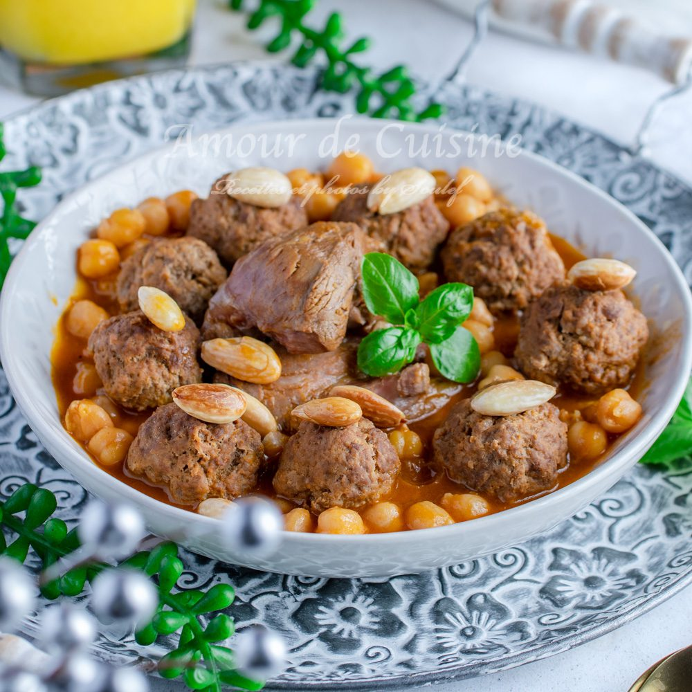

Description
Mtewem or tagine of minced meatballs with garlic,
a traditional Algerian dish that is very popular especially during
Ramadan and on special occasions based on meat mainly prepared with Chickpeas.
Ingredients
For The Sauce
- 300 g of meat in pieces
- 2 tablespoons of oil
- 1 tablespoon of butter
- 1 small onion
- 1 handful of chickpeas, soaked the day before
- 5 garlic clove
- salt
- Black pepper
- cumin powder
- red pepper or paprika
- 1/2 tsp. concentrated tomato coffee
For The Meatballs
- 250g minced meat
- 2 clove of garlic
- salt
- cumin powder
- black pepper
- red pepper or sweet paprika
- 2 slices of bread
- 4 tbsp. milk
- 1 egg
Steps
Prepare a red sauce for cooking the pieces of lamb meat:
-
In a pot, over low heat, put the pieces of meat
in the oil with the chopped onion,
leave them till they well browned.
-
Prepare the Dersa, for this crush the garlic with
a little powdered cumin, salt and sweet paprika.
-
When everything is well crushed to have a paste, add a little water,
and add to the pot on the meat.
-
Add the tomato puree and simmer for a few minutes.
-
Add a handful of chickpeas soaked the day before in water.
Then add enough boiling water to cover the meat and cook.
Now we are going to prepare the minced meatballs:
- Take bread and soak in a little milk.
- In a bowl, put the minced meat and
add the grated garlic, salt and spices:
cumin, black pepper and sweet paprika and the egg.
-
Add the bread, squeezed out of the milk,
and mix everything together to obtain a homogeneous mixture.
-
Form balls 3 cm in diameter, and keep them fresh.
-
Once the meat is cooked,
immerse the meatballs in the sauce,
simmer for a few minutes, to have a reduced sauce.
-
scoop some meatballs and red sauce onto a serving plate
,decorate with some almond and Enjoy your meal.
Return to the Top
Return to the main page